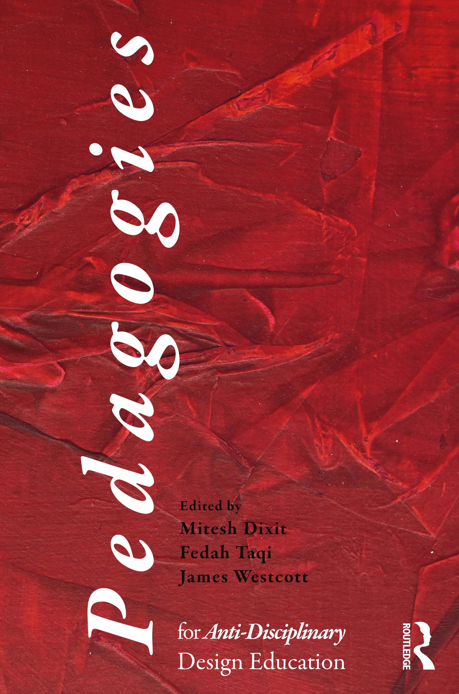

"Design Before Discipline: Scrappy Methods for a Contemporary Landscape Architecture Education" in Dixit, Taqi, Westcott (eds)
Pedagogies for Anti-Disciplinary Design Education
, 2026. Co-written with
Mariel Collard Arias
.
"A Semi-automated Workflow for Computationally Generating Perspectival Renderings of Geographic Scale Landscapes" in
Journal of Digital Landscape Architecture
, 9. 2024.